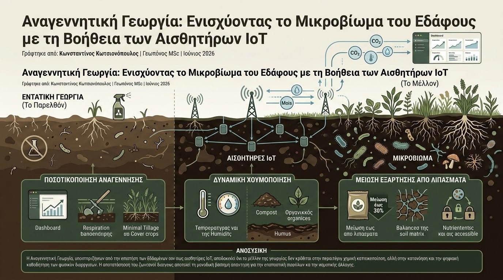

Για δεκαετίες, η εντατική γεωργική πρακτική αντιμετώπιζε το έδαφος κυρίως ως ένα αδρανές υπόστρωμα στήριξης των φυτών, εξαρτώμενο σχεδόν αποκλειστικά από την προσθήκη συνθετικών χημικών εισροών. Ωστόσο, η υποβάθμιση των εδαφών και η κατακόρυφη μείωση της οργανικής ουσίας παγκοσμίως οδήγησαν στην ανάδυση ενός νέου, βιώσιμου μοντέλου: της Αναγεννητικής Γεωργίας (Regenerative Agriculture). Στόχος της δεν είναι απλώς η διατήρηση, αλλά η ενεργή αποκατάσταση της υγείας του εδαφικού οικοσυστήματος, εστιάζοντας στο περίπλοκο δίκτυο των ζωντανών οργανισμών που φιλοξενεί, γνωστό ως εδαφικό μικροβίωμα.
Το εδαφικό μικροβίωμα, αποτελούμενο από δισεκατομμύρια βακτήρια, μύκητες (όπως οι μυκόρριζες) και πρωτόζωα, διαδραματίζει καθοριστικό ρόλο στην ανακύκλωση των θρεπτικών στοιχείων, τη δέσμευση του αζώτου και τη βελτίωση της δομής του εδάφους. Η σύγχρονη βιοτεχνολογία επιτρέπει πλέον τη χρήση μικροβιακών εμβολίων (microbial inoculants) —ωφέλιμων μικροοργανισμών που εφαρμόζονται στο έδαφος ή στους σπόρους— ενισχύοντας τη φυσική ανθεκτικότητα των φυτών έναντι παθογόνων και βελτιώνοντας την απορρόφηση του φωσφόρου και του καλίου.

Η μεγάλη ανατροπή στη διαχείριση της αναγεννητικής γεωργίας έρχεται από την ενσωμάτωση των τεχνολογιών του Internet of Things (IoT). Μέχρι πρόσφατα, η αξιολόγηση της βιολογικής δραστηριότητας του εδάφους απαιτούσε χρονοβόρες και δαπανηρές εργαστηριακές αναλύσεις. Σήμερα, ειδικοί θαμμένοι αισθητήρες αερίων και ηλεκτροχημικής συμπεριφοράς επιτρέπουν τη συνεχή καταγραφή της εδαφικής αναπνοής (soil respiration) —της ροής του CO2 που εκλύεται από τη μεταβολική δραστηριότητα των μικροοργανισμών και των ριζών.
Τα πλεονεκτήματα του συνδυασμού βιολογικών εμβολίων και ψηφιακής παρακολούθησης είναι πολλαπλά:
- Ποσοτικοποίηση της Αναγέννησης: Οι παραγωγοί μπορούν να παρακολουθούν σε ζωντανό χρόνο αν οι πρακτικές τους (όπως η ακαλλιέργεια ή οι καλλιέργειες κάλυψης) όντως αυξάνουν τον πληθυσμό των ωφέλιμων μικροοργανισμών, βλέποντας την αύξηση της εδαφικής αναπνοής στο dashboard τους.
- Δυναμική Χούμοποίηση: Η παρακολούθηση της ισορροπίας υγρασίας, θερμοκρασίας και εκπομπών αερίων βοηθά στον καθορισμό του ιδανικού χρόνου ενσωμάτωσης οργανικών βελτιωτικών (κόμποστ, χωνεμένη κοπριά), μεγιστοποιώντας τη σταθεροποίηση του άνθρακα στο έδαφος.
- Μείωση Εξάρτησης από Λιπάσματα: Ένα ενεργό και ισορροπημένο μικροβίωμα μπορεί να ξεκλειδώσει δεσμευμένα θρεπτικά συστατικά του εδάφους, επιτρέποντας τη σταδιακή μείωση των συνθετικών αζωτούχων και φωσφορούχων λιπασμάτων έως και 30%, χωρίς απώλειες στην παραγωγή.
Η Αναγεννητική Γεωργία, υποστηριζόμενη από την επιστήμη των δεδομένων και τους αισθητήρες IoT, αποδεικνύει ότι το μέλλον της γεωργίας δεν κρύβεται στην περαιτέρω χημική εντατικοποίηση, αλλά στην κατανόηση και την ψηφιακή καθοδήγηση των φυσικών διεργασιών. Η αποκατάσταση του ζωντανού εδάφους αποτελεί τη μοναδική βιώσιμη απάντηση για την επισιτιστική ασφάλεια και την αντιμετώπιση της κλιματικής αλλαγής.